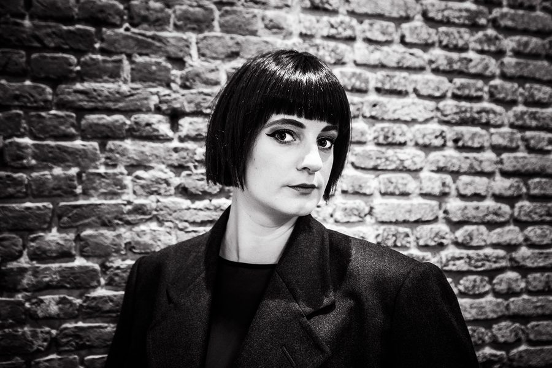

About the photographer
Stories with
volume.

Passie voor muziek en fotografie.
Joren Van Utterbeeck maakt fotografische herinneringen van concerten en party’s. Met oog voor contrast, detail en de juiste belichting, zodat de sfeer van het moment intact blijft. Rauw, maar gestileerd, energiek en altijd dynamisch.
Joren volgde Grafische Media en Multimedia aan de Technische Scholen Mechelen en studeerde Beeldende Vormgeving aan Sint-Lucas Gent. Sinds 2008 combineert hij zijn grootste passies: muziek en beeld.
Vandaag fotografeert hij concerten, festivals, artiesten en muzikale projecten. Daarnaast geeft hij grafische vormgeving en fotografie aan de Technische Scholen Mechelen.
Let's make some noise ↗